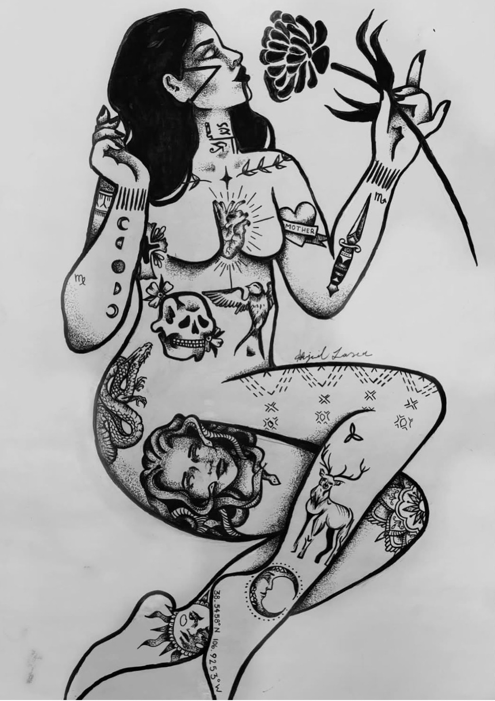

Lasting Life Through Art

In the past several years, tattoos have become far more socially acceptable. They have become an art form. Stereotypical
opinions about tattoos, such as that tattoos are for criminals and delinquents, tattoos are for uneducated people, people wit
h tattoos will have difficulty finding employment, and tattoos are unsafe and unsanitary, have started to become disproven. It
has become a form of self-expression and identity. An ancient craft that has played a role in many diverse cultures, usually
for serious spiritual, political, and/or social purposes, has history on its side. However, unlike most art we see in museums
or online, tattoos remain permanent on the skin rather than on a canvas. It’s also a painful process, so can getting a tattoo
out of grief be considered self-harm? Tattoos are a unique and meaningful medium for art, both because of their intimate
nature on our bodies and their permanence. Tattoos have significant therapeutic implications and can be a way for someone to
process grief, trauma, and PTSD.
How does tattoo ink remain, even after the cells it was rumored to have “stained” have died? When a tattoo needle punctures the
skin, especially when done repeatedly, your body treats it as a wound. Because of this, immune system cells rush to the area.
Macrophages take up the ink, release it when they die, and it gets eaten by new macrophages. So even as these cells regenerate,
the tattoo remains. Macrophages are designed to capture foreign particles and expel them, but because of the unique chemistry
of tattoo ink, they are unable to recognize these particles as expellable and instead hold onto them until their death. The ink
particles become trapped inside the vacuole of these cells when they initially try to launch an immune attack against the
foreign particles (Kapoor). So, the reason tattoos work is a freak accident and a faulty system in the body.
People get tattoos for assorted reasons, whether for the sheer enjoyment of the art form, to symbolize personal meaning such as
honoring a loved one or significant event, to boost self-image, or to cope with traumatic experiences such as sexual trauma.
Tattoos can give a sense of uniqueness. A 2020 study analyzing the personal accounts of tattooed survivors in different countries
revealed that tattoos can be a therapeutic outlet (Crompton et al.). It has been found that among survivors of sexual violence,
tattoos served as a nontraditional form of healing, including a means of reclamation (Maxwell et al.). A way to cope with and
process trauma. Medusa herself and her story have become a symbol of women's empowerment. According to Greek mythology, Medusa
was a beautiful woman who served as a virgin priestess of the goddess Athena. One day, her beauty caught the attention of
Poseidon, the god of the sea. The most common story reads that she was brutally raped by him in Athena’s temple. Athena, furious,
transformed her into a gorgon, a winged female monster with snakes for hair that could turn anyone to stone with just one look
. Women have started to receive tattoos of Medusa to symbolize survival, strength, and overcoming assault, often sexual assault
(Fowler). Beyond the symbolism of the Medusa tattoo, its spiritual meaning has come to signify transformation and rebirth.
The Medusa tattoo has allowed survivors to regain control over their trauma. Allowing them to process their grief and PTSD in
a controlled environment, Sarnecki argued that tattoos might serve as an appropriate platform to psychologically integrate the
impact of the trauma by physically reexperiencing it through the process of being tattooed (i.e., the purposeful infliction of
pain), allowing for further comprehension via the body in a controlled environment. Therefore, choosing to be tattooed, in this
sense, reflects an act of reclaiming control over the traumatic experience, the violated body, and the resistance to the
oppressive social environment (Sarnecki).
The oldest documented tattoos belong to Otzi the Iceman, whose preserved body was discovered in the Alps between
Austria and Italy in 1991. He died around 3300 B.C. There is evidence to argue that tattoos started long before this.
America seems to be one of the few countries with negative connotations surrounding tattoos. For other cultures around the
world, tattoos are symbols of power, toil, and honor. In many indigenous societies, tattoos were not applied by just anyone.
The actual process was usually ritualized. Occasionally, the domain of tattooists was reserved for priestesses,
female aristocrats, healers, and shamans. In Samoa, tattooing experts (tufuga tā tatau) were always male, and they participated
in lengthy apprenticeships to earn a place in the guild of tattooers. These priestly men were compelled to honor patron deities
and follow traditional rules and prohibitions; otherwise, their tattoos lacked mana, or spiritual potency (Krutak). The cultural
tradition of warrior tattooing, where tattoos were earned and not freely given, was also widespread across Asia, Africa,
Melanesia, South America, and Polynesia (Krutak).
While some people view tattoos as destructive to the body and a form of defacing natural beauty, others would say that
tattoos help them reclaim their bodies to have a better relationship with themselves. As we said before, when getting a tattoo,
the body reacts as if the tattoo is a wound, which is true. The act of getting a tattoo involves dragging a needle down through
your skin, creating a sort of cut within the skin. So yes, tattoos are painful. Recognizing that is important. However, is there
evidence to say that tattoos can be considered self-harm? Despite the pain involved, which seems contrary to human nature,
people endure it. Self-harm is characterized by intentional self-inflicted damage to body tissue without suicidal intent (such
as cutting, burning, scraping skin, hitting, and biting oneself), which is not culturally sanctioned behavior (Klonsky, Saffer,
Victor). So, you could argue that receiving a tattoo is not self-harm, as it is socially acceptable. However, it wasn’t always
socially acceptable. Negative stereotypes surrounding tattoos in the United States started during the late eighteenth century,
when tattoos were introduced to Western society. In the nineteenth century, beauty contests in the circus used heavily tattooed
women, known as “Tattooed Ladies' ', as a new attraction in the circus. Women with tattoos were viewed as revolting and depraved.
In “A History of Tattoo Stigma,” they exemplified this through a 1920’s trial, saying, “A rape trial in 1920s Boston exemplified
this, when the female accuser was discovered to have a butterfly tattoo and the case was immediately dropped. (Luzier 9)” Stories
surrounding tattoos later perpetuated anti-Indigenous sentiments (Luzier 10).
In my opinion, the more significant argument for why tattoos are not self-harming is their symbol of survival.
Receiving a tattoo symbolizes the bravery of survival in the long struggle. Whether that struggle is a literal war that a
warrior fights, they are then honored for their bravery through the great honor of receiving a tattoo. Or the figurative
war that each person struggles with within their own lives. We have seen sexual assault survivors receive tattoos to symbolize
their rebirth. Or cancer survivors getting tattoos to take back control and reclaim their bodies. Tattoos have been an art form
that symbolizes progress in one's life, a way to move forward into the next chapter after the war is over and the fighting is done,
and it is now safe to take off your armor. It is very brave to put something on your body and tell the world, “Now you see me and
what I have endured and survived.” Even if your tattoo has no significant meaning, it is still just another way to ask the world and
the people around you to see a part of yourself. It is significant to you in some form, even if the significance is just that you value art.
"How many times have people used a pen or paintbrush because they couldn't pull the trigger?" -Virginia Wolf. That is all any form of art is,
saying to the world, “I was here. I created. I have survived. See me and all that I have endured.”
Work Cited
Sarnecki, Judith Holland. 2001. “Trauma and Tattoo.” Anthropology of Consciousness 12 (2):35–42. doi: 10.1525/ ac.2001.12.2.35.
Maxwell, December, Johanna Thomas, and Shaun A Thomas. 2019. “Cathartic Ink: A Qualitative Examination of Tattoo Motivations for Survivors of Sexual Trauma.” Deviant Behavior 41(3): 348–65. doi: 10.1080/ 01639625.2019.1565524.
Krutak L. The cultural heritage of tattooing: a brief history. Curr Probl Dermatol. 2015;48:1-5. doi: 10.1159/000369174. Epub 2015 Mar 26. PMID: 25833618.
Alexa Stevenson, Alexa. “Probing Question: What is the history of Tattooing?” Penn State University. 19 June 2008, https://www.psu.edu/news/research/story/probing-question-what-history-tattooing/#:~:text=The%20oldest%20documented%20tattoos%20belong,surface%20originated%20long%20before%20Otzi.
Luzier, Sophie. “Most Vulgar and Barbarous: A History of Tattoo Stigma.” Portland State University PDXScholar, Young Historians Conference, 2023, https://pdxscholar.library.pdx.edu/cgi/viewcontent.cgi?article=1260&context=younghistorians.
Kapoor, Sky. “From Machines to Macrophages: Breaking Down the Science of Tattooing.” The Varsity. 31 October 2021, https://thevarsity.ca/2021/10/31/science-of-tattooing/.
Crompton, L., Plotkin Amrami, G., Tsur, N., & Solomon, Z. (2021). Tattoos in the Wake of Trauma: Transforming Personal Stories of Suffering into Public Stories of Coping. Deviant Behavior, 42(10), 1242–1255. https://doi.org/10.1080/01639625.2020.1738641
Fowler, Kate. “Medusa Tattoo Meaning” Newsweek. 11 November 2021, https://www.newsweek.com/tiktok-medusa-tattoo-meaning-explained-1648390.